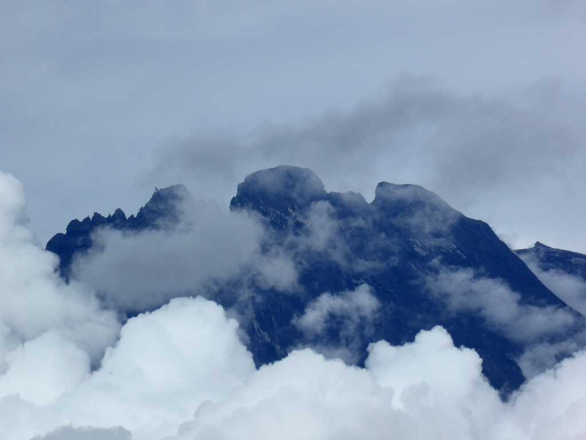
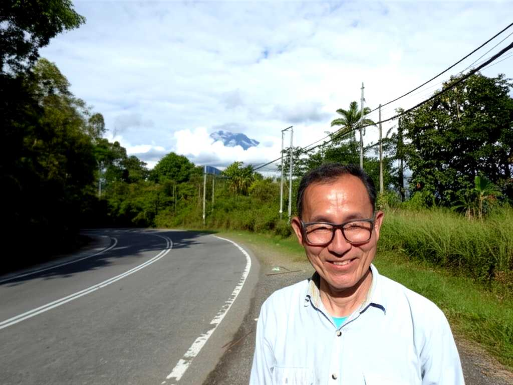
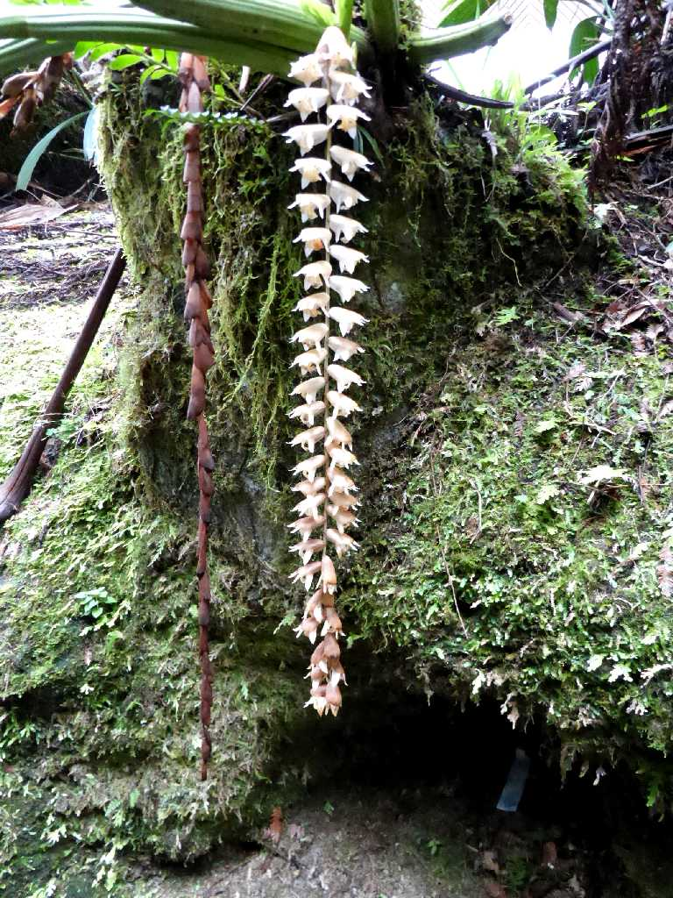
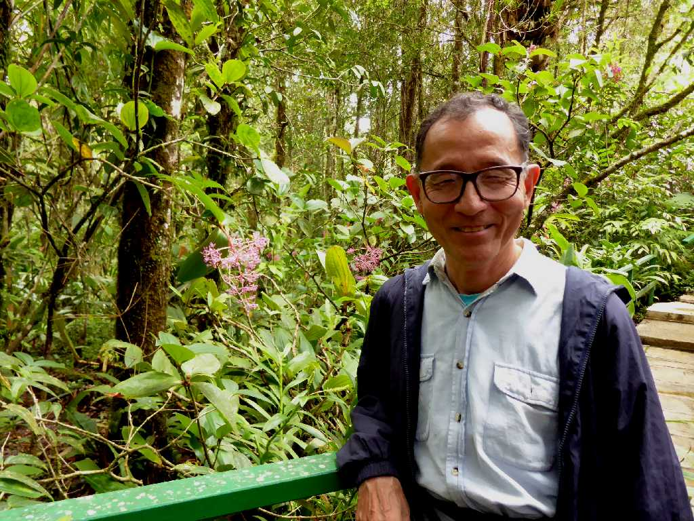

Mt. Kinabalu Taman Kinabalu (Kinabalu Park)
東南アジア最高峰４,０９５ｍキナバル山

June 24 2024 Kinabalu
Aki Nabalu 死者の聖地 祖先を奉る山 を意味すると考えられている

Large Dendrochilum Magnum Orchid Mount Kinabalu Botanical Gardens

June 24 2024 Medinilla Magnifica Mount Kinabalu Botanical Gardens